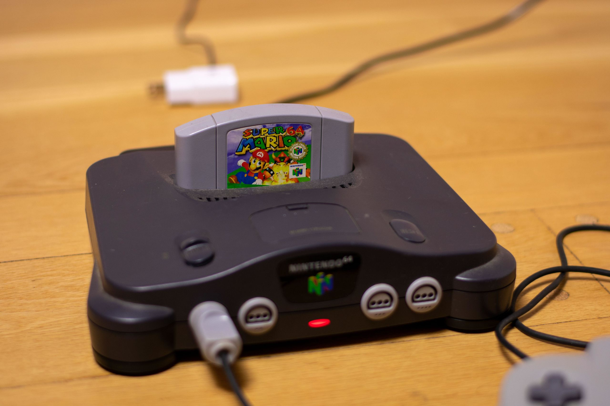
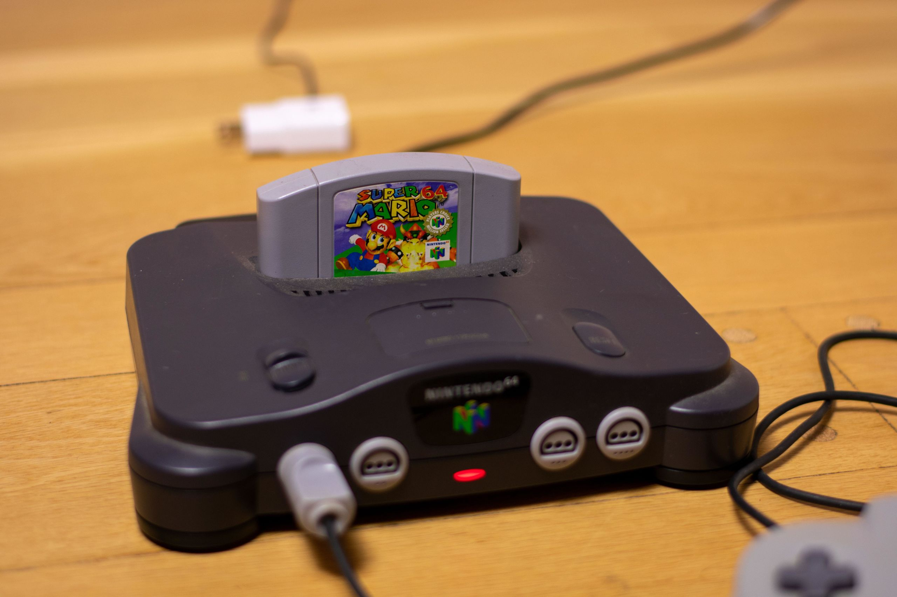
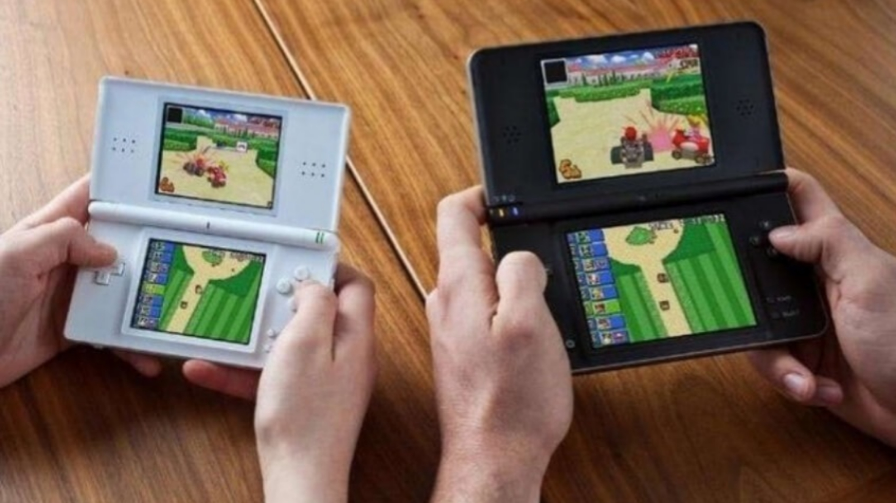
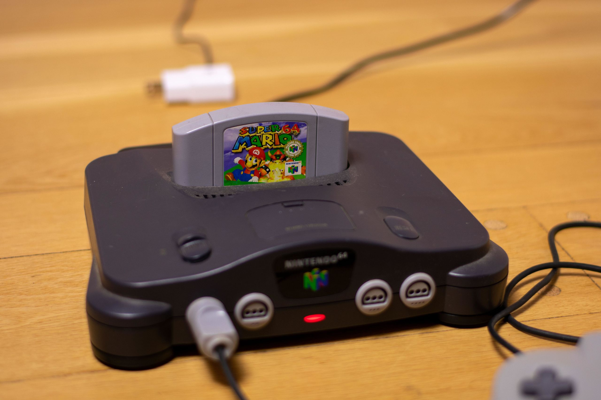
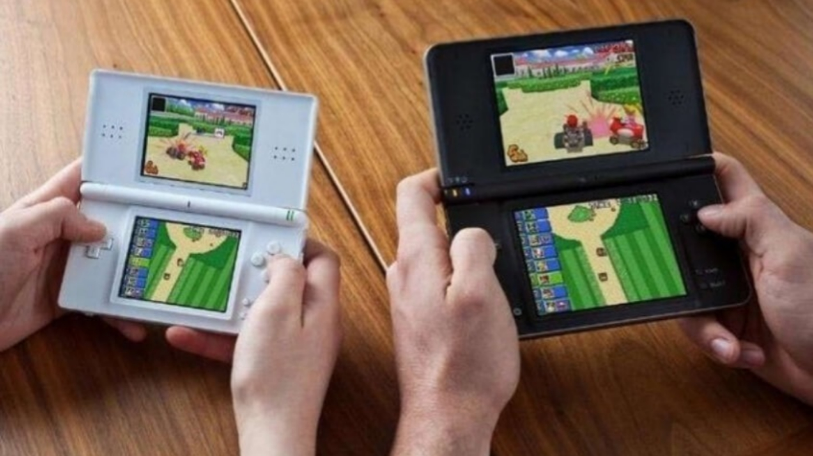
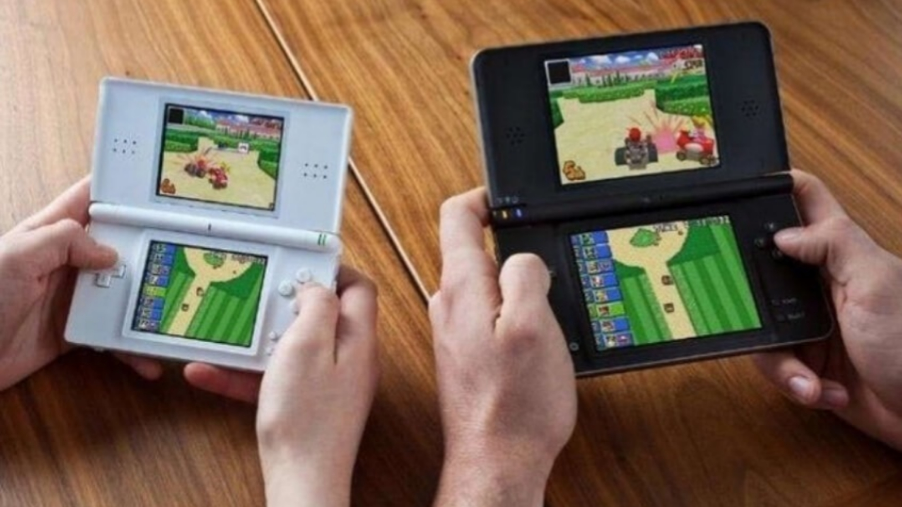
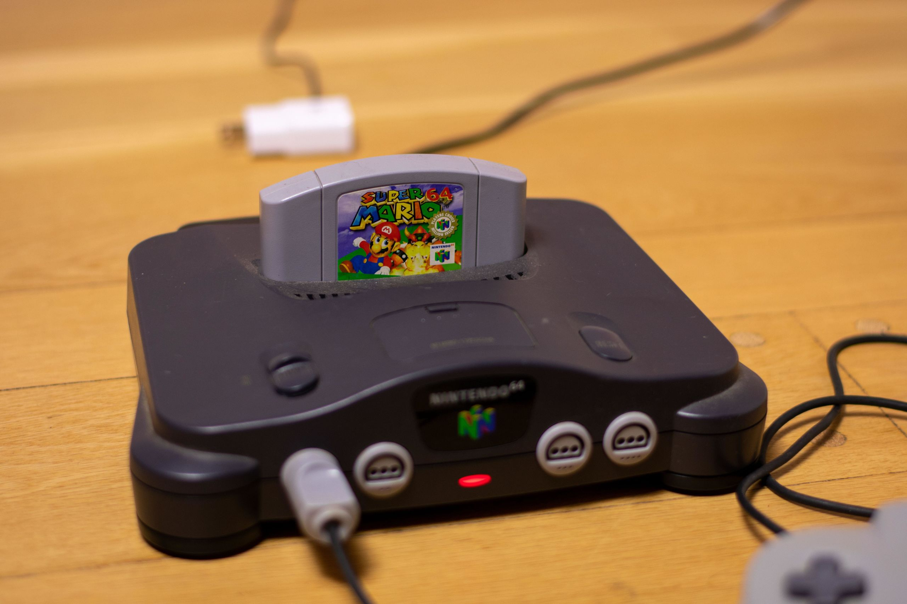
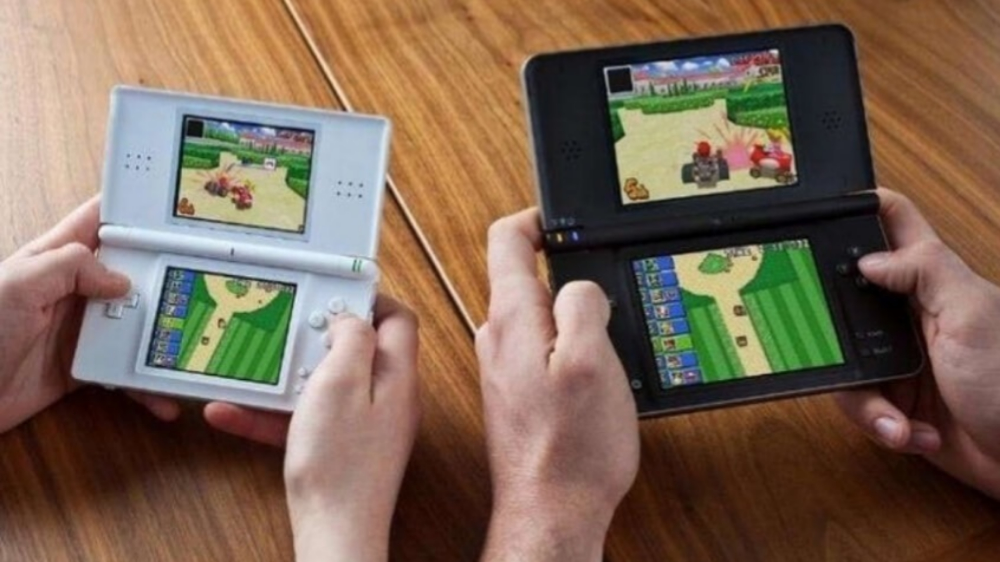
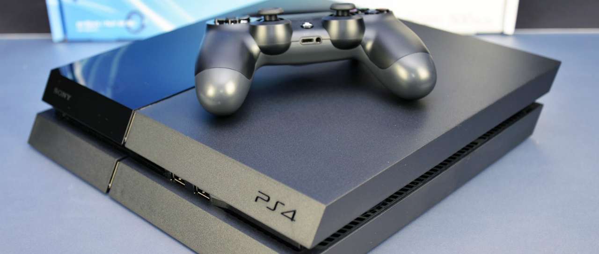

 





el último día laborable de 2012, PlayStation 2 se dejó de fabricar en todo el mundo. La consola de sobremesa más vendida,
Con 12 años de historia con más de 150 millones de consolas compradas en todo el mundo, Con 10.000 títulos sumando
ediciones de las diferentes regiones, y más de 1.500 millones de juegos vendidos. Unos n√∫meros espectaculares y no muy
comunes en la actualidad.

Las únicas novedades fueron la estética, más estilizada y pulida y la posibilidad de elegir entre cuatro niveles de brillo.
Nintendo inició el desarrollo de la NDSi a inicios del 2006 y este fue revelado en la conferencia de Nintendo en tokioel 2 de octubre de 2008 después del éxito de DS Lite. La meta de Nintendo es estrechar la distancia entre los usuarios
por consola en los hogares.se dio a conocer en octubre de 2016 y fue lanzada mundialmente el 3 de marzo de 2017. Nintendo se considera una consola híbrida.
Se puede utilizar como consola de sobremesa con la unidad principal insertada en una estación de acoplamiento que va al televisor.
Alternativamente, puede ser extraída de la base y utilizada de forma similar a una tableta a través de su pantalla táctil o colocada sobre
una superficie gracias a su soporte plástico integrado siendo así visible por varios jugadores.
por primera vez en Japón el 21 de abril de 1989, en Norteamérica más tarde ese mismo año y en Europa a finales de 1990.
Fue diseñado por el mismo equipo que desarrolló la serie Game & Watch de juegos electrónicos portátiles y varios juegos de Nintendo
Entertainment System (NES): Satoru Okada, Gunpei Yokoi y Nintendo Research & Development
y forma parte de las videoconsolas de octava generación. Fue anunciada oficialmente el 20 de febrero en el evento PlayStation
Meeting, el diseño de la consola no fue presentado hasta el 10 de junio en el 2013, Es la sucesora de la PlayStation 3,
compite con Wii U de Nintendo y Xbox One de Microsoft.
